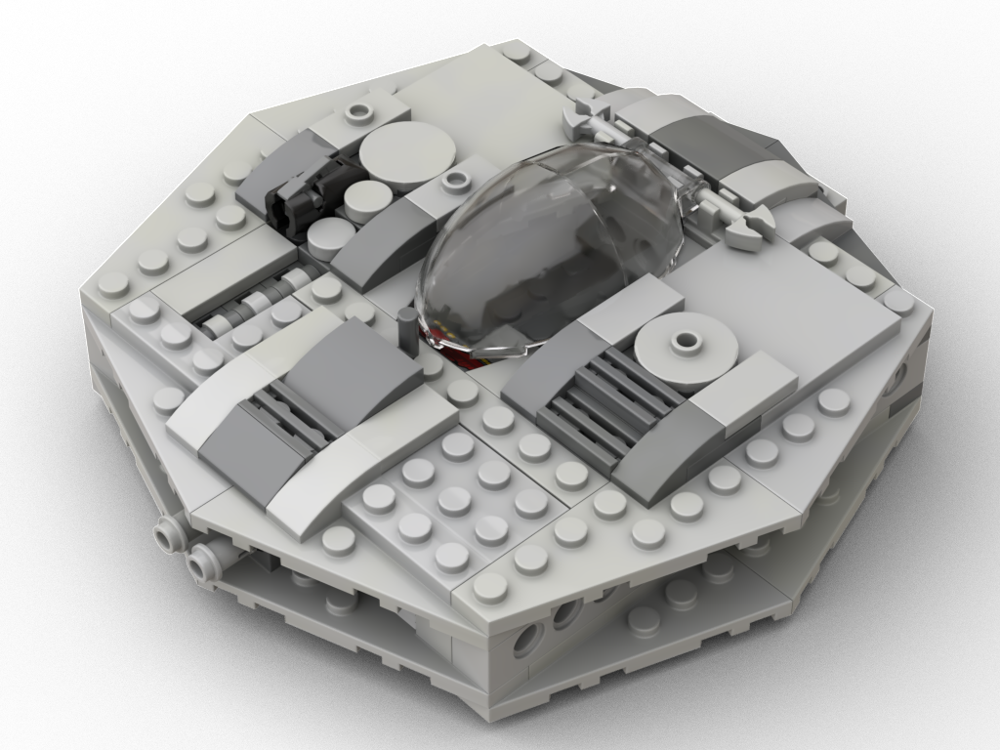
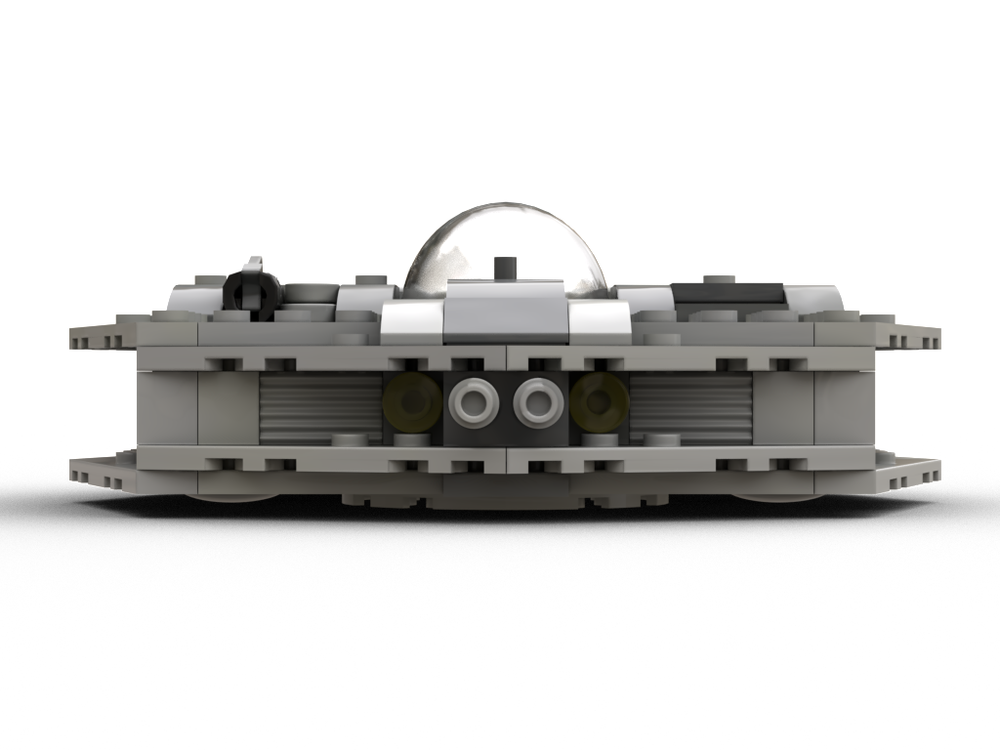
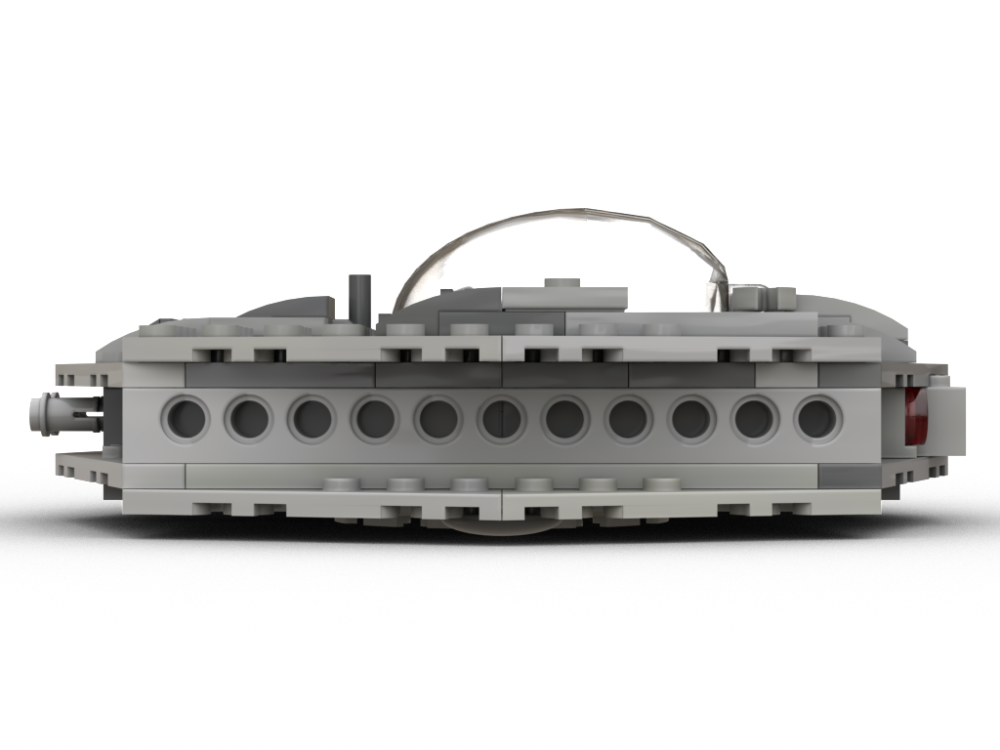
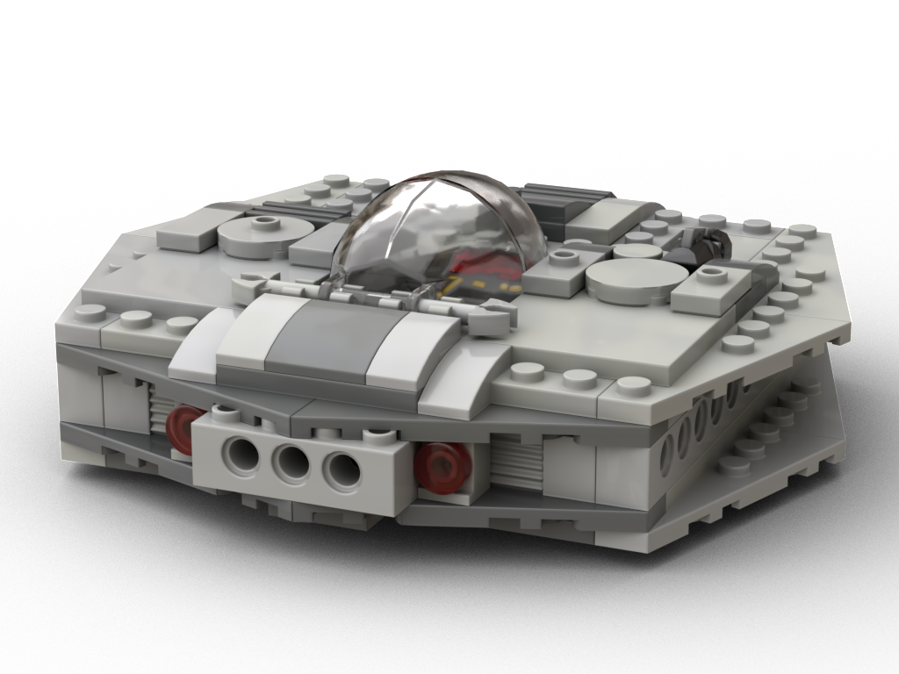
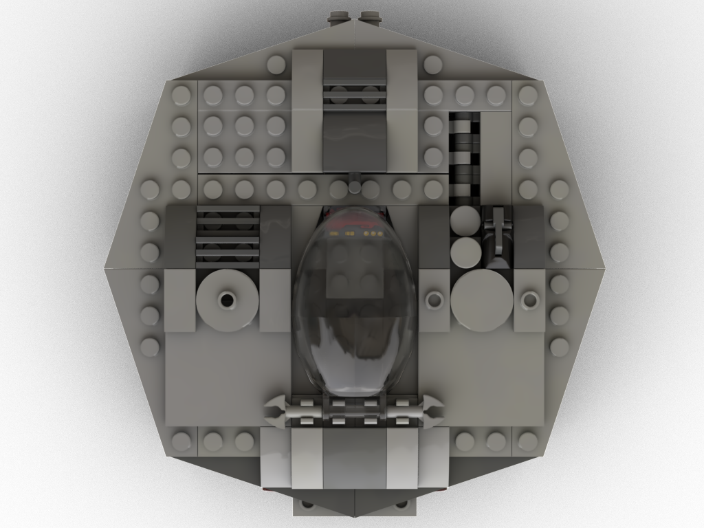
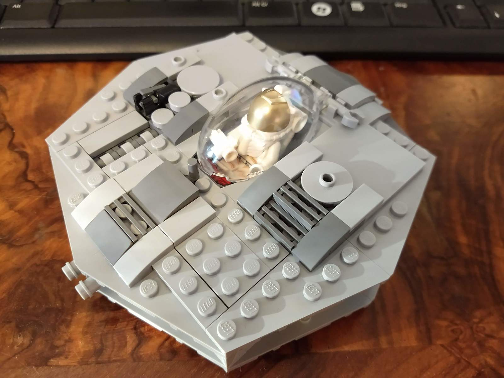
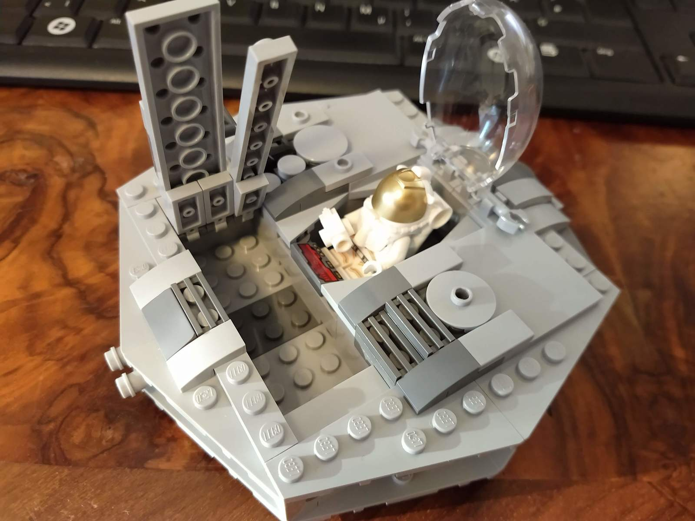
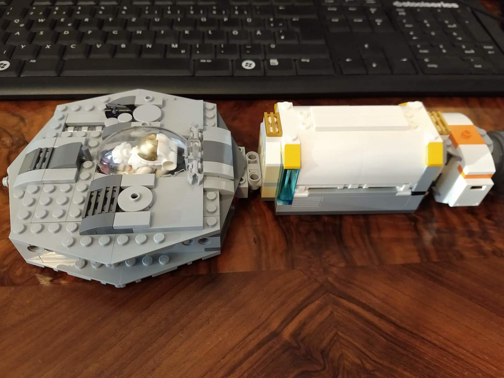
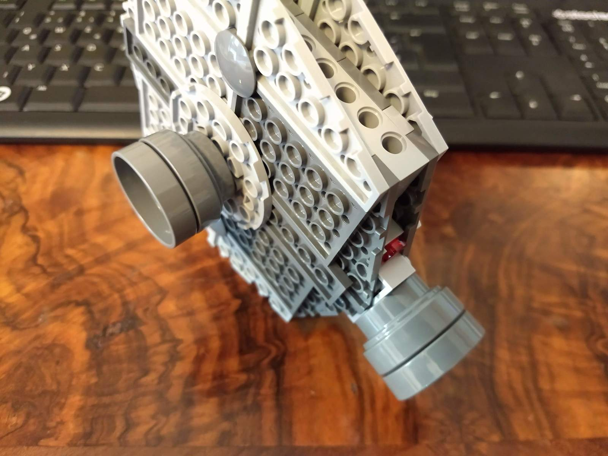

The Good Industries "Saucer" is a retro-style sports spaceship. It features rear and bottom docking points, in case the family needs to come along. The spacious cargo bay hides equipment or an abducted cow. Light weaponry emphasizes every Saucer pilot's claim to skip traffic.
Instructions (includes part list)
    
Having lots of those 6x3 wedges, I wanted to put them to use. This instantly defined the shape of the spaceship. The cockpit was designed right after the raw form, granting good pilot space and closing nicely around the glass dome. I decided against moving the control computer closer to the center, which would have resulting a tighter cockpit closing at the sacrifice of pilot space.
The model is very sturdy and heavier than needed. Mass can be cut by eliminating the 6x1 and 6x2 bricks left/right of the cockpit. I added the slightly asymmetric greeble left and right of the cockpit to make the model look less boring.
   